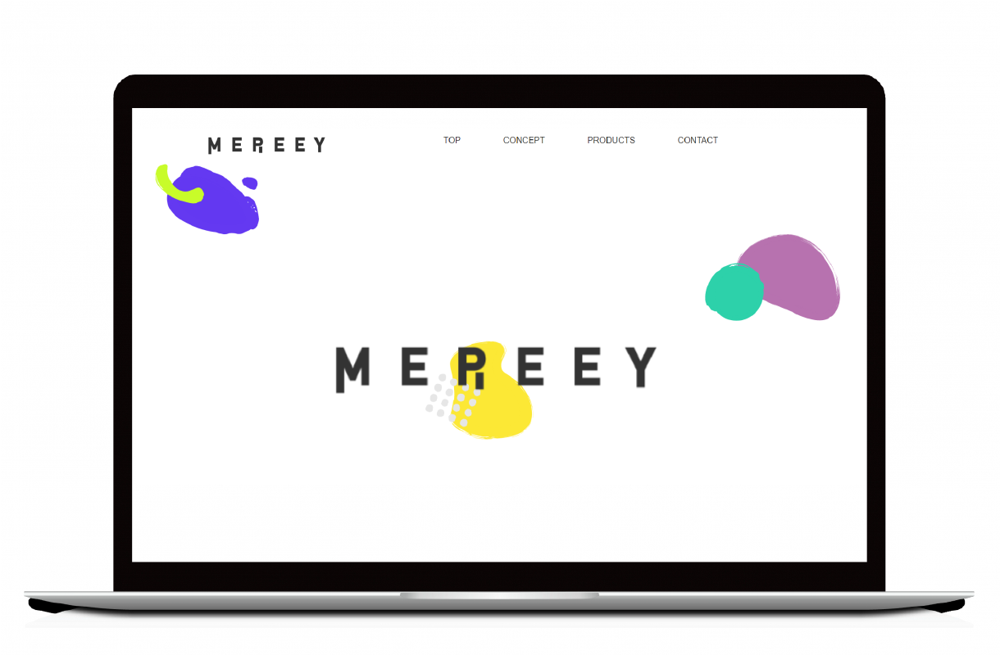
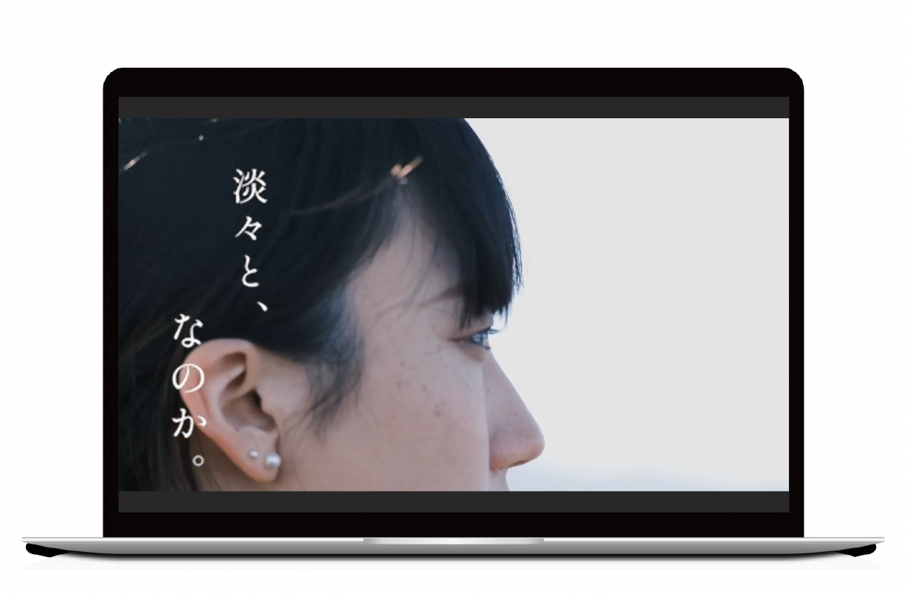
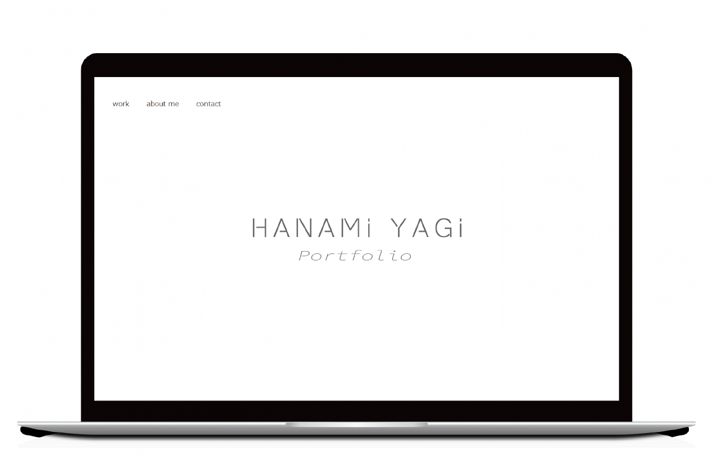

担当 デザイン・コーディング
期間 約1か月
使用ツール Adobe XD・Visual Studio Code
ブランドコンセプト「自由なジブン、それは楽しいジブン」
様々な色や模様でそれぞれの個性を表現しています。
お客様が一目でわかりやすいようにリップの色を拡大表示する、
選択時に背景色を変更するなどの工夫を行いました。

担当 撮影補助・編集
期間 １週間
使用ツール Adobe Premierepro
https://youtu.be/amFSDXFYY5E
親友を亡くしてしまった主人公が散骨の日まで淡々と過ごしていく物語。
セリフがあまりない作品なので、流れを意識して編集しました。

担当 デザイン・コーディング
期間 1か月
使用ツール Adobe Illustrator・Adobe XD・Visual Studio Code
シンプルで分かりやすいサイトを意識して制作しました。
ページ内ジャンプや折り畳みを活用し、見やすくなるよう工夫を行いました。